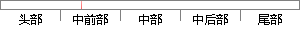

数值是每月的额外通话时长的平均值（单位：分钟）；
片段位置图

相似结果|
相似片段 1：。本文用通话时长、短信条数和数据流量来表征客户的基础购买价值。(1)通话时长：客户每月的话费总时长，单位用分钟计算。(2)短信条数：客户每月所发出的短信条数，单位用条来计算。(3)数据流量：客户每月所传输的数据流的大小，单位用KB计算。
|
※ 片段修改建议 ※
近似词参考：- 每月：每个月
- 额外：分外
- 单位：单元
系统自动生成语句：数值是每个月的分外通话时长的平均值（单元：分钟）；
注：本片段修改建议为系统自动生成，仅供参考。